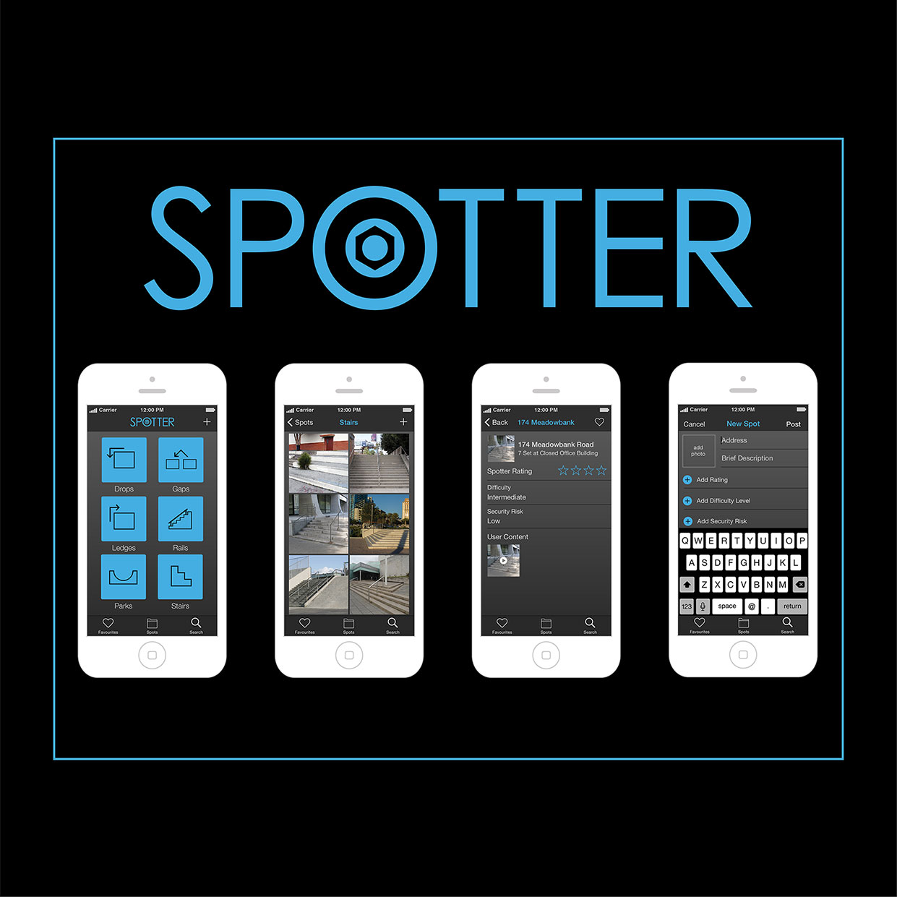

A third year student of Algonquin College's Graphic Design program specializing in layout design, UI/UX design, and production with experience in the industry as a Pre-Press Multimedia Designer working under Osprey Media.
Material Design App Concept
An application concept developed for Android. UI/UX developed by myself using material design rules.
Wednesday Addams Illustration
Character illustration using scanned custom made brushes in Illustrator.
The Dead White North Game Menu Concept
A video game menu concept developed in AfterEffects.
Elder Scrolls: Skyrim Movie Poster
A large movie poster design for print built within photoshop and InDesign. Brought in Assets and created a cohesive promotional poster.
Ransom Note Writing Tips Article
An article layout designed with InDesign and assets done in photoshop. Photography is my own.
Wearable & App Concept
Material design UI for a wearables app concept, based on smart-lense technology.
Minerva Font Design
Some promotional posters for the font Minerva designed using Illustrator and the Glyphs App.

The X-Files Quote Book
A small booklet designed for print inspired by the sci-fi television series The X-Files.
Jurassic Park Soundtrack Vinyl Redesign
Created a new booklet design for the original Jurassic Park movie soundtrack. Ready for print.

{kind=link}
{kind=link}
{kind=link}
{kind=link}
{kind=link}
{kind=link}